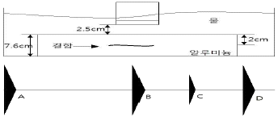
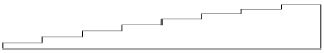

초음파비파괴검사기능사 (2008-03-30 기출문제)
1과목: 초음파탐상시험법
1. 초음파탐상시험시 시험체 면과 탐촉자사이에 물과 같은 액체를 채워 일정거리를 유지하면서 검사하는 방법은?
- 접촉법
- 수침법
- 투과법
- 표면파법
(정답률: 100%)

2. 탐촉자의 지향각에 대한 설명으로 옳은 것은?
- 파장에 비레한다.
- 주파수에 비례한다.
- 초음파 속도에 반비례한다.
- 탐촉자의 크기에 비례한다.
(정답률: 알수없음)
3. 다음 중 비파괴검사를 통하여 평가할 수 있는 항목과 가장 거리가 먼 것은?
- 시험체 내의 결함 검출
- 시험체의 내부구조 평가
- 시험체의 물리적 특성평가
- 시험체 내부의 결함 발생시기
(정답률: 알수없음)
4. 초음파 탐상시험시 결함의 평면을 파악하기 위해서는 어느 표시방식이 적절한가?
- A 스캔표시
- B 스캔표시
- C 스캔표시
- 디지털 표시
(정답률: 알수없음)
5. 다음 중 티탄산바륨계 자기 진동자의 가장 큰 특징에 해당되는 것은?
- 송신효율이 높다.
- 사용수명이 길다.
- 음향 임피던스가 낮다
- 전지적 임피던스가 높다
(정답률: 알수없음)
6. 선원-필름간 거리가 4m 일 때 노출시간이 60초였다면 다른 조건은 변화하지 않고 선원-필름간 거리만 2m로 할 때의 노출시간은 얼마로 해야 하는가?4
- 15초
- 30초
- 120초
- 240초
(정답률: 70%)
7. 다음 중 결함의 형태를 추정하는데 가장 효과적인 주사법은?
- 전후 주사
- 좌우 주사
- 회전 주사
- 탠덤 주사
(정답률: 알수없음)
8. 초음파 탐상기의 특성 중 근거리 분해능이란?
- 초음파 음속에 평행한 방향의 불연속을 검출할 수 있는 능력
- 미세한 금속조직으로 된 단조품의 중심에 놓인 불연속을 검출할 수 있는 능력
- 표면의 약간 긁힌 자국을 검출할 수 있는 능력
- 검사체의 입사면 바로 밑에 있는 불연속을 검출할 수 있는 능력
(정답률: 알수없음)
9. 초음파 경사각탐상시험에서 접근한계 거리(길이)란?
- 탐촉자의 입사점으로부터 밑면의 선단까지의 거리
- 탐촉자가 검사체에 가까이 갈 수 있는 한계거리
- 탐촉자와 STB-A1 시험편이 접근할 수 있는 한계거리
- 탐촉자와 STB-A2 시험편이 접근할 수 있는 한계거리
(정답률: 알수없음)
10. 다음 중 침투탐상시험 원리와 가장 관계가 깊은 것은?
- 틴달 현상
- 삼투압 현상
- 용융 현상
- 모세관 현상
(정답률: 82%)
11. 다음 중 펄스의 반복주파수가 많을 때 브라운관은 어떻게 되겠는가?
- 증폭도가 매우 높게 된다.
- 에코의 밝기가 밝게 된다.
- 에코의 밝기가 어둡게 된다.
- 에코의 밝기가 항상 일정하게 된다.
(정답률: 64%)
12. 다음 중 초음파탐상시험의 접촉 매질이 갖추어야 할 요건으로 가장 거리가 먼 것은?
- 부식성, 유독성이 없어야 한다.
- 적용할 면에 대하여 균질해야 한다.
- 쉽게 적용하고 제거하기가 쉬워야 한다.
- 탐촉자 내부로 쉽게 흡수될 수 있어야 한다.
(정답률: 90%)
13. 물질의 음향 임피던스(Z)를 구하는 식으로 옳은 것은?
- Z = 밀도 × 음속
- Z = 비중 × 부피
- Z = 질량 ÷ 밀도
- Z = 무게 ÷ 음속
(정답률: 알수없음)
14. 자분탐상검사시 원형자화법을 적용할 때 검사체 직경 25.4㎜(1 인치)당 소요 전류(A)의 범위로 적절한 것은?
- 100 ~ 125
- 800 ~ 1000
- 1200 ~ 1500
- 2000 ~ 3000
(정답률: 알수없음)
15. 다른 조건의 변화가 없을 때 다음 중 초음파 탐상시험에서 분해능이 가장 좋은 주파수는?
- 1MHz
- 2MHz
- 5MHz
- 10MHz
(정답률: 알수없음)
16. 다음 중 초음파의 파장에 대한 설명으로 옳은 것은?
- 속도와 주파수에 비례한다.
- 속도에 주파수를 곱한 값이다.
- 속도에 반비례하고, 주파수에 비례한다.
- 속도에 비례하고, 주파수에 반비례한다.
(정답률: 알수없음)
17. 서로 다른 두 매질이 접촉하고 있는 면을 무엇이라 하는가?
- 계면
- 굴절면
- 반사면
- 입사면
(정답률: 알수없음)
18. 초음파 탐상기에서 동기장치 시간조절회로는 탐상기의 무엇을 조절하는가?
- 펄스의 길이
- 이득(Gain)
- 펄스 반복주파수
- 소인 길이
(정답률: 알수없음)
19. 수침법으로 두께 80㎜ 강재를 수직탐상할 때 표시기 상에 1차 저면 반사파를 2차 표면 반사파 앞에 나타내고자 할 때 물거리로 옳은 것은?(단, 물에서의 종파속도는 1500m/s, 강에서의 종파속도는 6000m/s 이다.)
- 10㎜
- 15㎜
- 20㎜
- 25㎜
(정답률: 20%)
20. 용접부 초음파탐상시험의 경우 탐촉자의 주사에 대한 설명으로 옳은 것은?
- 탐촉자의 주사방법은 결함의 크기 측정에만 적용된다.
- 주사방법이 적절하면 결함치수 및 결함의 종류, 모양을 정확히 평가할 수 있다.
- 결함을 찾기 위해 탐촉자의 위치를 움직여 가며 초음파의 입사위치를 변화시키는 것을 주사라 한다.
- 경사각탐상에서는 탐촉자를 이동시켜 주사하여 최대의 결함에코가 얻어졌을 때 탐촉자의 바로 아래에 결함이 있는 것이다.
(정답률: 알수없음)
2과목: 초음파탐상관련규격
21. [그림]은 7.6㎝ 알루미늄 시험편에 대한 수침검사와 스크린상의 모양이다. 스크린 상의 지시 B 는?

- 초기 펄스
- 1차 결함지시
- 1차 탐상 윗면 반사지시
- 1차 탐상 저면 반사지시
(정답률: 알수없음)
22. 탐촉자를 구상하는 요소 중 압전재료 뒷면에 부착된 흡수재(baxking material)의 설명으로 틀린 것은?
- 흡수재는 압전재료의 배면으로 반사되는 초음파에너지를 흡수한다.
- 흡수재는 크리스탈의 댐핑(Damping)양을 적절히 조정해 준다.
- 흡수재는 되돌아 반사해 오는 펄스를 전기적 신호로 전환시켜 준다.
- 흡수재는 압전물질이 요동하지 못하도록 고정시켜 주는 역할을 한다.
(정답률: 알수없음)
23. 시험체 두께가 45㎜, 탐촉자의 굴절각이 60° 일 때, 1스킵 범위에서 탐상하려고 할 때 다음 중 측정 범위로 적당한 것은?
- 50㎜
- 100㎜
- 125㎜
- 200㎜
(정답률: 알수없음)
24. 경사각탐상에서 탐촉자로부터 나온 초음파빔의 중심축이 저면에서 반사하는 점 또는 탐상표면에 도달하는 점이란 무엇을 의미하는가?
- 스킵점
- 교축점
- 입사점
- 큐리점
(정답률: 알수없음)
25. 분할형 수직탐촉자를 이용한 초음파탐상시험의 특징에 대한 설명으로 틀린 것은?
- 펄스반사식 두께측정에 이용한다.
- 송수신의 초점은 시험체 표면에서 일정거리에 설정된다.
- 시험체 표면에서 가까운 거리에 있는 결함의 검출에 적합하다.
- 시험체 내의 초음파 진행 방향과 편행한 방향으로 존재하는 결함 검출에 적합하다.
(정답률: 40%)
26. 금속재료의 펄스반사법에 다른 초음파탐상 시험방법 통칙(KS B 0817)에 규정한 “기록 및 보고” 내용에 포함되어야 하는 사항과 가장 거리가 먼 것은?
- 시험체에 관한 것
- 시험조건에 관한 것
- 검사용어에 관한 것
- 탐상기의 성능에 관한 것
(정답률: 알수없음)
27. 압력용기용 강판의 초음파탐상 검사방법(KS D 0233)에서 이진동자 수직탐촉자에 의한 결함의 분류시 결함의 정도가 “가벼움”을 나타내는 표시 기호는?
- ×
- ○
- △
- □
(정답률: 알수없음)
28. 금속재로의 펄스반사법에 따른 초음파탐상 시험방법 통칙(KS B 0817)에 따른 “에코높이의 기록”에 대한 설명으로 틀린 것은?
- 흠 지시 길이의 중앙 또는 끝의 위치를 기록한다.
- 표시가 눈금의 풀 스케일에 대한 백분율(%)로 기록한다.
- 미리 설정한 “에코 높이를 구분하는 영역”의 부호로 기록한다.
- 미리 설정한 기준선 또는 특정 에코 높이와의 비의 데시벨(㏈) 값으로 기록한다.
(정답률: 알수없음)
29. 강 용접부의 초음파 탐상 시험방법(KS B 0896)에 따른 탐상기에 필요한 성능을 설명한 것으로 옳은 것은?
- 감도 여유값은 20㏈ 이상으로 한다.
- 증폭직진성은 ±5%의 범위 내로 한다.
- DAC 회로를 내장하는 탐상기의 DAC회로는 30㏈ 이상 보상할 수 있는 것으로 한다.
- DAC 회로를 내장하는 탐상기의 경사값 조정은 적어도 4.8~48㏈/㎜(횡파)의 범위에서 할 수 있는 것으로 한다.
(정답률: 39%)
30. 알루미늄의 맞대기용접부의 초음파경사각탐상 시험방법(KS B 0897)에서 사용 중인 경사각 탐촉자로서 규정에 적합하지않은 것은?
- 1탐촉자법에 사용된 진동자 치수 5×5㎜
- 1탐촉자법에 사용된 진동자 치수 10×10㎜
- 탠덤탐상법에 사용된 공칭 주파수 5㎒
- 탠덤탐상법에 사용된 주험주파수 10㎒
(정답률: 42%)
31. 강용접부의 초음파탐상 시험방법(KS B 0896)에 따라 경사각 탐상시험을 할 때, 결함 분류를 위한 에코높이 구분선의 작성에 관한 설명으로 다음 중 틀린 것은?
- 실제로 사용하는 탐촉자를 사용하여 작성한다.
- 작성된 에코높이 구분선은 눈금판에 기입한다.
- 초기 에코높이 구분선과 10㏈ 씩 다른 에코높이 구분선을 3개 이상 작성한다.
- A2형계 표준시험편을 사용할 때 ø4×4㎜의 표준 구멍을 사용한다.
(정답률: 77%)
32. 강용접부의 초음파탐상 시험방법(KS B 0896)에서 탐상기에 필요한 성능 중 시간축의 직전성을 측정값의 얼마 이내의 범위이어야 하는가?
- ±1%
- ±2%
- ±3%
- ±5%
(정답률: 알수없음)
33. 비파괴시험 용어(KS B ⑤50)의 정의를 설명한 것으로 틀린 것은?
- 초음파 : 20㎑ 이상의 음파
- 시험주파수 : 탐상시험에 사용하는 주파수
- 방해에코 : 탐상에 방해가 되는 에코, 쐐기 안 에코, 잔류에코 그 밖의 여분의 에코 등을 포함 시킨 총칭
- 게인 : 탐상기에 있어서 어떤 일정 높이 이하의 에코 또는 잡음을 억제하는 것
(정답률: 알수없음)
34. 비파괴시험 용어(KS B ⑤50)에 규정된 두꺼운 시험체의 탐상면에 수직인 결함을 검출하기 위하여 탐촉자 2개를 앞뒤로 배치하고 한 개는 송신용, 다른 한 개는 수신용으로 하여 실시하는 탐상법은?
- 판파법
- 투과법
- 수동탐상법
- 탠덤탐상법
(정답률: 알수없음)
35. 초음파 탐촉자의 성능척정 방법(KS B ⑤35)에 규정된 직접 접촉용 1진동자 경사각 탐촉자의 불감대 측정에 STB-A2 시험편을 사용한 경우의 설명으로 옳은 것은?
- 시험편의 ø1.5×4㎜를 탐상한 에코높이를 100%에 조정한 후 측정한다.
- 시험편의 ø4×4㎜를 탐상한 에코높이를 100%에 조정한 후 측정한다.
- 시험편의 ø1.5×4㎜인 구멍 2개를 탐상한 에코높이를 20%에 조정하고, 다시 14㏈ 강도를 높여 송신펄스의 파형이 마지막으로 80% 되는 점을 시간축상에 읽어 측정한다.
- 시험편의 ø4×4㎜를 탐상한 에코높이를 20%가 되게 조정하고, 다시 14㏈ 강도를 높여 송신펄스의 파형이 마지막으로 20% 되는 점을 시간축상에 읽어 측정한다.
(정답률: 알수없음)
36. 강용접부의 초음파탐상 시험방법(KS B 0896)에서 경사각 탐촉자에 필요한 성능 중 원거리 분해능은 사용할 탐상기와 조합하여 공칭주파수가 2MHz일 때 얼마로 규정하고 있는가?
- 5㎜ 이하
- 6㎜ 이하
- 9㎜ 이하
- 24㎜ 이하
(정답률: 알수없음)
37. 압력용기용 강판의 초음파탐상 검사방법(KS D 0233)에 따라 강판 내부를 검사한 결과이다. 다음 중 불합격인 것은?
- 결함표시 기호는 × 이며, 결함 1개의 최대 지시길이가 90㎜ 인 지시
- 결함표시 기호는 × 이며, 밀집도(△결함 환산개수)가 15개인 지시
- 결함표시 기호는 △ 이며. 결함 1개의 최대 지시길이가 200㎜ 인 지시
- 결함표시 기호는 △ 이며, 점적률(△결함 환산비율)이 10%인 지시
(정답률: 알수없음)
38. 알루미늄의 맞대기용접부의 초음파경사각탐상 시험방법(KS B 0897)에 따른 탐촉자의 선정이 틀린 것은?
- 1탐촉자법에 사용하는 경사각 탐촉자의 굴절각은 전반의 대상 결함 모두에 45도인 탐촉자를 쓴다.
- 1탐촉자법에 사용하는 경사각 탐촉자의 빔노정이 50㎜ 이하인 경우 진동자 치수는 5×5㎜를 쓴다.
- 탠덤탐상법에 사용하는 경사각 탐촉자는 결함의 깊이가 25㎜ 이하인 경우 5M[10×10]A70AL를 쓴다.
- 탠덤탐상법에 사용하는 경사각 탐촉자는 결함의 깊이가 25㎜를 초과하는 경우 5M[10×10] A45AL를 쓴다.
(정답률: 62%)
39. 강용접부의 초음파탐상 시험방법(KS B 0896)에 의한 시험결과의 분류시 판두계가 16㎜, M 검출레벨로 영역Ⅲ 인 경우 흠 지시길이가 8㎜ 이었다면 어떻게 분류 되는가?
- 1류
- 2류
- 3류
- 4류
(정답률: 54%)
40. 압력용기용 강판의 초음파탐상 검사방법(KS D 0233)의 대비시험편을 개략적으로 나타낸 [그림]이다. 이 시험편의 주된 사용 용도는?

- 수직탐촉자의 거리진폭특성을 조사하는데 사용한다.
- 경사각탐촉자의 거리진폭특성을 조사하는데 사용한다.
- 단조강 제품의 경사도를 측정하는데 사용한다.
- 강 용접부의 압연 상태를 측정하는데 사용한다.
(정답률: 50%)
3과목: 금속재료일반 및 용접일반
41. 웹브라우저가 인터넷상의 서버에서 텍스트, 그림, 사운드, 동영상을 가져올 수 있도록 해주는 프로토콜은?
- SQL
- HTTP
- HTML
- IP
(정답률: 알수없음)
42. 통신망의 구성요소인 통신망 접속카드(Network InterfaceCard)에 대한 설명은?
- 방사형 통신망에서 사용한다.
- 비슷한 종류의 통신망들끼리 연결해 준다.
- 통신망의 연결점에서 컴퓨터를 접속시키는 요소이다.
- 다른 종류의 통신망에 연결된 컴퓨터와 통신을 가능하게 한다.
(정답률: 알수없음)
43. 다음 중 인터넷에서 제공되는 서비스가 아닌 것은?
- ARPANET
- USENET
- TELNET
- IRC
(정답률: 알수없음)
44. 운영체제의 가장 중심적인 프로그램으로 시스템의 동작상태를 관리하는 것은?
- 감시 프로그램
- 서비스 프로그램
- 작업제어 프로그램
- 데이터 관리 프로그램
(정답률: 9%)
45. 컴퓨터에 입력되지 자료들을 일정 기간 동안 또는 일정량의 자료를 모아서 처리하는 시스템 방식은?
- 병렬처리 시스템
- 일괄처리 시스템
- 시분할 처리 시스템
- 다중 프로그래밍 시스템
(정답률: 알수없음)
46. 자동차 부품을 만드는 현장에서 부품표면에 열처리시 탄소와 질소를 동시에 표면에 침투확산시켜 표면경화하는 방법은?
- 질화법
- 가스침탄질화법
- 가스침탄법
- 고주파경화법
(정답률: 알수없음)
47. 다음 중 1 ~ 5㎛ 정도의 비금속 입자가 금속이나 합금의 기지 중에 분산되어 있는 재료를 무엇이라 하는가?
- 합금공구강 재료
- 고속도강 재료
- 서멧(cermet) 재료
- 탄소공구강 재료
(정답률: 67%)
48. 특수한 방법으로 제조한 알루미나가루와 알루미늄가루를 압축성형하고, 약 550℃에서 소결한 후 열간압출하여 사용하는 재료로 일명 SAP 라 불리는 것은?
- 내열용 Al 의 총칭
- Al 분말의 소결품
- Al 제품 중 초경질 합금
- 피스톤용 합금 계열의 총칭
(정답률: 28%)
49. 오스테나이트계 스테인리스강이 되기 위해 첨가되는 주 원소는?
- 18%크롬(Cr)-8%니켈(Ni)
- 18%니켈(Ni)-8%망간(Mn)
- 17%코발트(Co)-7%망간(Mn)
- 17%몰리브덴(Mo)-7%주석(Sn)
(정답률: 92%)
50. 금속의 산화(酸化)에 관한 설명 중 틀린 것은?
- 금속의 산화는 이온화 경향이 큰 금속일수록 일어나기 어렵다.
- Al보다 이온화 계열이 상위에 있는 금속은 공기 중에 서도 산화물을 만든다.
- 금속의 산화는 온도가 높을수록, 산소가 금속 내부로 확산 하는 속도가 클수록 빨리 진행된다.
- 생성된 산화물의 피막이 치밀하면 금속 내부에의 산화는 어느 정도 저지된다.
(정답률: 알수없음)
51. Al-4%Cu 합금을 515℃에서 급랭하였을 때 얻은 과포화 고용체가 상온에서 시간의 경과에 따라 제 2상을 석출하며 강도, 경도가 증가하는 현상은?
- 상온시효
- 분상강화
- 개량처리
- 용체화처리
(정답률: 50%)
52. 다음 중 금속의 물리적 성질이 아닌 것은?
- 비열
- 용융장열
- 부식
- 열팽창계수
(정답률: 알수없음)
53. 다음 중 금속간 화합물에 대한 설명으로 틀린 것은?
- 변형하기 어렵고 메짐성이 있다.
- 간단한 원자비로 결합되어 있다.
- 대부분의 금속간 화합물은 높은 용융점을 갖는다.
- 보통 일반화합물에 비하여 결합력이 강하며, 높은 온도에서 안정하다.
(정답률: 알수없음)
54. 다음 중 전연성이 좋기 때문에 가공성이 좋은 결정격자는?
- 체심입방격자
- 면심입방격자
- 조밀육방격자
- 사방육면체격자
(정답률: 79%)
55. 다음 중 주강에 대한 설명으로 틀린 것은?
- 주철에 비하여 기계적 성질이 우수하다.
- 조직은 거칠고 메짐성을 가지고 있다.
- 주철로서 강도가 부족할 때 사용된다.
- 주철에 비하여 주조하기 쉽다.
(정답률: 60%)
56. 다음 중 탄수강의 탄소 함유량으로 옳은 것은?
- 0.001%C 이하
- 약 0.025 ~ 2.11%C
- 약 2.11 ~ 6.68%C
- 6.68%C 이상
(정답률: 알수없음)
57. 다음 중 1kgf/mm2㎫ 로 환산한 값으로 옳은 것은?
- 약 0.98
- 약 9.8
- 약 100
- 약 1000
(정답률: 알수없음)
58. 피복 금속 아크 용접에서 직류 정극성으로 용접하면 모재의 용입은?
- 직류 역극성보다 얕다.
- 직류 역극성과 같다.
- 직류 역극성보다 깊다.
- 교류 용접과 같다.
(정답률: 알수없음)
59. 가스용접에 대한 특징 설명으로 틀린 것은?
- 응용범위가 넓으며 운반이 편리하다.
- 열의 집중성과 열효율이 높다.
- 아크 용접에 비해 가열범위가 넓어 변형이 증가한다.
- 아크 용접에 비해서 유해광선 발생률이 적다.
(정답률: 알수없음)
60. 융접균열은 다음 중 어느 경우에 가장 많이 발생 되는가?
- 고탄소강 용접비드 수축시
- 용접후 노 내에서 서냉시
- 연강 용접시
- 저수소계 용접봉 사용시
(정답률: 24%)